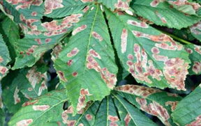

Set location
Cancel Got your location
Got your location
Your co-ordinates are:
We can't show you a map right now, but we do have the co-ordinates for your position, so let's just use those.
Help us to track the spread of the miner moth in the UK by recording the damage they do to conker (horse-chestnut) trees near you. We're interested in data from both damaged and undamaged trees.
For details of our privacy policy please see the 'Getting started guide'.
Take a look around underneath the canopy of the tree. What do you see?
We've not been successful in determining your location, so please enter it below instead. Include the postcode or nearest village/town and county.
e.g. "BA1 3EY", "Compton Martin, Somerset"
To add a record, return to the home screen and tap 'Add new record'.
Are you sure you want to clear your list of records? You will not be able to undo this action.
Note: this only affects the list on your device. Records you have already sent will remain in our database.
You can send a report about any conker (horse-chestnut) tree that you find in the UK. We are interested in trees with damage caused by the leaf-mining moth that has recently spread to Britain, as well as undamaged trees. You are welcome to submit as many records as you like throughout the summer, but please only create 1 record per tree per month.
Creating a record involves taking a photo of a leaf using your device's camera, confirming your location, assigning a damage rating and recording what you see underneath the tree.
Take a photo of a leaf which you think is typical of the leaves near the bottom of the tree. Give it a damage score as shown on the 'damage rating' screen.
Leaf-mining moth damage (damage rating = 2)
Leaves damaged by the leaf-mining moth are distinctive:
Leaf blotch caused by fungal infection — not the moth
It is not the leaf-mining moth if:
More information about the project can be found on our Conker Tree Science website www.ourweboflife.org.uk.
Leaf blotch photo by David Glaves.
The following sections explain how any personal data collected in the process of using this application will be stored and used.
If you choose to supply the Conker Tree Science: Leaf Watch project with your e-mail address it will only be used in order to update you on the project's findings and future activities. You can opt out at any time by e-mailing us at conker-science@bristol.ac.uk with the word 'unsubscribe' in the subject.
Your device's unique identification number will be collected. This is essential for verification of your records. It does not identify the device owner.
All data collected will be stored on Google's app engine. Google have a data privacy statement.
Your e-mail and device's unique identification number will be stored for the duration of the Conker Tree Science project.
No one outside of the Conker Tree Science: Leaf Watch project will have access to your personal data. If required by law data will not be made available to any third parties* unless:
* Third parties may include researchers and scientists from outside the project undertaking work on the horse-chestnut leaf miner moth.
Your record has been added to our database.
Remember, you can follow the progress of the project on our website at www.ourweboflife.org.uk.
Please try to re-submit this record later
Note: you can try to re-submit a failed record by going to 'My records' from the home screen, and tapping a record to re-send it.
Please try to re-create this record
Please try to re-submit this record later
Note: you can try to re-submit a failed record by going to 'My records' from the home screen, and tapping a record to re-send it.
Your record has been added to our database.
Remember, you can follow the progress of the project on our website at www.ourweboflife.org.uk.
Please try to re-submit this record later
Please try to re-create this record
Your list of records has been cleared from your device.